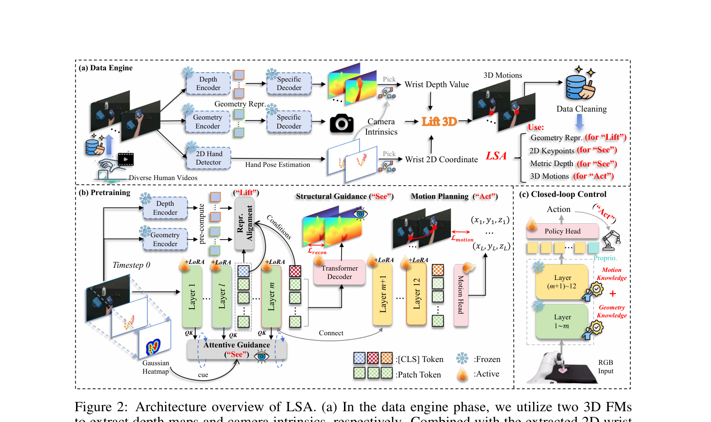
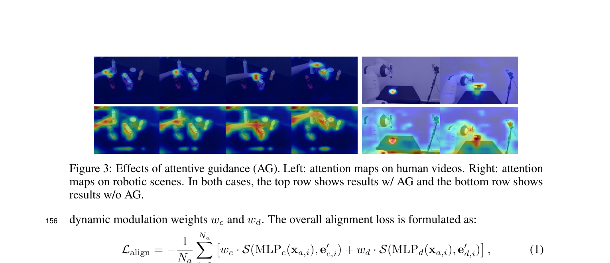
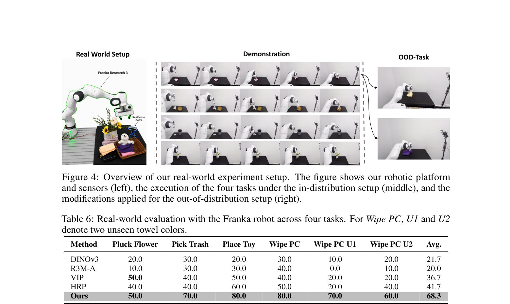

01
Lift
Elevate 2D video observations into dense 3D representations by aligning policy features with multiple frozen 3D foundation models.
South China University of Technology
† Corresponding author
Learning robot policies from human video is powerful, but video alone does not expose the action-relevant 3D structure a robot needs.
We introduce LSA, a hierarchical robot policy pretraining framework organized around three phases: Lift, See, and Act. Lift aligns shallow policy features with dense intermediate representations from multiple 3D foundation models. See builds explicit geometric and interactive awareness through depth reconstruction and hand-region guidance. Act turns these representations into robust 3D motion prediction for closed-loop manipulation. Experiments across simulation and real-world tasks show consistent gains over prior approaches.
Elevate 2D video observations into dense 3D representations by aligning policy features with multiple frozen 3D foundation models.
Build geometric and interaction awareness through depth reconstruction and attention guidance from human hand regions.
Predict precise 3D hand motion trajectories and transfer the learned motion priors to robust closed-loop robot control.



Six demonstrations, including unseen towel-color variants for the wiping task.
@inproceedings{ge2026lift,
title = {Lift, See, Act: Hierarchical Robot Policy Pretraining
with 3D Foundation Models},
author = {Ge, Yiyuan and Ding, Changxing and Hao, Ziyu and
Zheng, Zijie and Xu, Xiangmin},
booktitle = {Advances in Neural Information Processing Systems},
year = {2026}
}